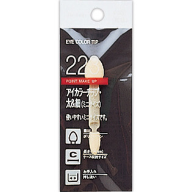

返回列表
产品名称：資生堂 アイカラーチップ・太＆細（ミニサイズ）

資生堂 資生堂 アイカラーチップ・太＆細（ミニサイズ） ２２３
メーカー 資生堂
JANコード 4901872637218
商品の特徴
ケースに収納しやすいサイズで、まぶたにやさしい２種類の太さのちがうチップが両端についています。
成分・分量
-
用法及び用量
【使用方法】・広く描きたいときは太いチップ、ラインのように描きたいときは細かいチップを使ってぼかします。 ・チップが汚れたときは、ぬるま湯に中性洗剤をうすく溶かしたなかで、軽く押し洗いをします。 ・十分すすいで水気をきり、日かげでよく乾かしてからお使いください。